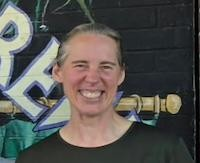

Alisa Campbell | WDD 130

I live in Jonesville, Virginia but am a Sterile Processing Traveler so I am currently in Portland, Maine working at Maine Medical Center. My hope is to get a degree and do work that will allow me to be closer to, or at home. I have dreams of homesteading and fostering children. My husband and I currently have 20 chickens that are more like family pets than livestock. I love learning and have been blessed to have the opportunity of being part of the BYU Pathway family.